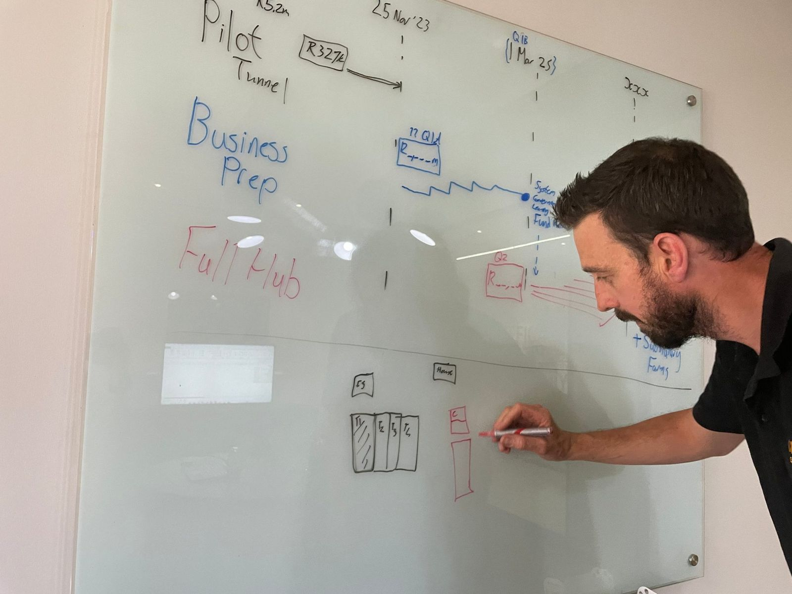
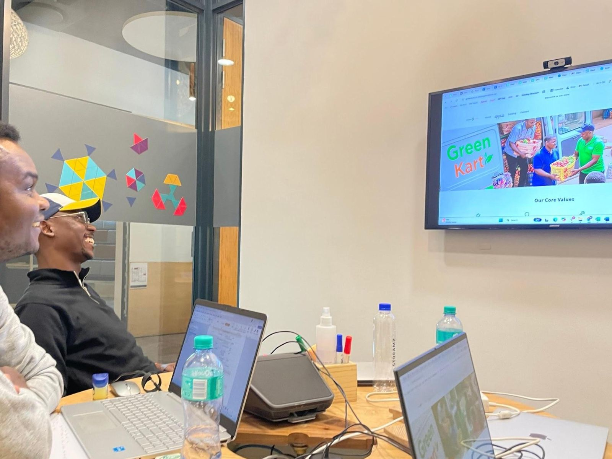

One team, one plan per company.
The Venture Engine is our shared company-building team. It works inside each business from Day 1, led by an experienced venture partner who helps the founder set priorities and brings in the specialists.
The system does the heavy lifting. People do the work.
Everything runs through one well-designed, dynamic operating system. Real people in operating finance, people, growth and tech work inside the business alongside it and do the work with the founder.
One system, real people, around every founder.
Four pillars, run by real people
| Operating finance | Cash planning, bookkeeping, management accounts, controls and funding readiness. |
|---|---|
| People | Role design, recruitment, HR admin, performance routines and training. |
| Growth | Customers, proposition, pricing, brand, sales process and routes to market. |
| Tech | Practical tools, connected data, automation and customer interfaces built from real operating needs. |
Our edge is knowing the early stage across many kinds of business. Domain expertise sits with the founder, or is recruited into the company.
The founder runs the business
The founder runs
The team, the customers, the product, and keeping the bank account alive. Decisions and responsibility sit with the founder.
The Engine runs
The four pillars around the business. If it fills a management gap, it does so for a defined period, with a handover plan.
Five stages, each with a budget and a review
Every stage has a timeframe, an accountable lead and a review before more capital follows.
Discover
Work alongside the founder to test the model, the market and the fit.
Build
Set up premises, systems, team and the plan to trade.
Launch
Go to market, learn from customers and fix what breaks.
Establish
Steady operations, sound margins and reliable reporting.
Grow
Follow-on capital, own leaders, and handover of functions.
A routine every company keeps
| Weekly | Cash, sales, delivery and blockers. |
|---|---|
| Monthly | Accounts, performance and people. |
| Each stage | A stage review before any major capital decision. |
Tools come from the work, then get reused
We start with the workflow and the user, use existing tools where they fit, and build custom only when repeated use justifies it. Our companies are where tools are piloted before they are reused across the portfolio.


Operating
Scheduling, stock, production, fulfilment and quality, owned by the company team.
Support
Accounts, payroll, people records and reporting, connected so admin is dependable.
Sales
Enquiries, quotes, orders and follow-ups, tied to margin and cash.
Customer-facing
Ordering, payment and service that fit how customers behave, such as Uniformitys' parent ordering.